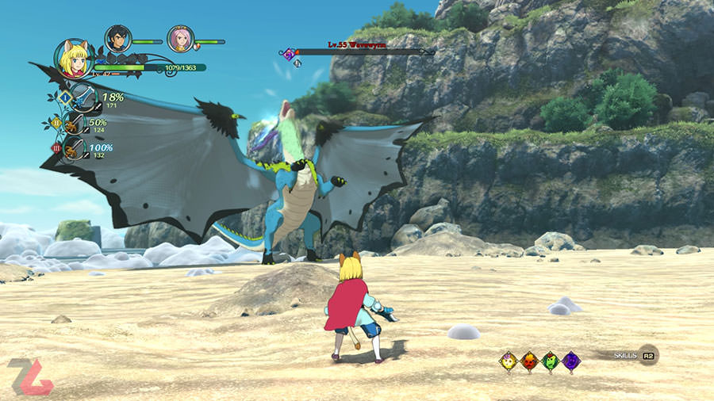
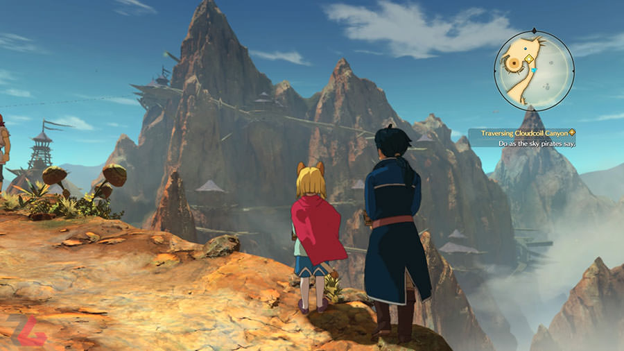

بازی Ni no Kuni II: Revenant Kingdom اثری است که با بهکارگیری المانهای بازیهای مشابه، سعی کرده تجربیات جدید و باارزشی را ارائه دهد. با بررسی این بازی همراه زومجی باشید.
داستانها و افسانههای ژاپنی در دو شاخه قرار میگیرند؛ داستانها و افسانههایی که حال و هوای جدی و خشن دارند نظیر دنیای ساموراییها یا داستانها و افسانههای شاد که اغلب دارای طراحیهای رنگی و فانتزی هستند که برای نمونه میتوان سری Zelda را مثال زد. یکی از همین دسته بازیها که دنیای شاد و مفرحی را ارائه میدهد، مجموعه Ni no Kuni است که اولین نسخه آن در سال ۲۰۱۰ برای پلتفرم پلی استیشن 2 روانه بازار شد. حال سومین نسخه از سری Ni no Kuni روانه بازار شده و پس از هفت سال دوری، به خانه مخاطبان خود بازگشته است. بازی Ni no Kuni II: Revenant Kingdom جدیدترین ساخته استودیو Level-5 است که تغییرات بسیاری نسبت به نسخه پیشین داشته و سعی کرده است حال و هوای متفاوتتری داشته باشد. بازی Ni no Kuni II: Revenant Kingdom دقیقا همان اثری است که در میان بازیهای خشن، نشان میدهد که بازیهای ویدیویی چقدر میتوانند زیبا و دوست داشتنی باشند.
در روزهایی که گذشت، اطلاعات فراوانی دربارهی جزئیات گیمپلی بازی منتشر شد و همچنین تکلیف احتمال عرضهی بازی برای ایکس باکس وان نیز توسط اینسامنیاک برای همیشه روشن شد. در کنار همهی این موارد تایید شده که بازی قرار نیست هیچگونه پرداخت درون برنامهای داشته باشد. اگر به شخصیت اسپایدرمن و بازیهایی که با محوریت این شخصیت تولید شدهاند علاقه دارید میتوانید مقالهی «نگاهی به بازی های ساخته شده با محوریت Spider-Man» را در زومجی مطالعه کنید.
بازیکنهای ژاپنی در هفته گذشته شاهد دوئل دو نقش آفرینی بزرگ برای تصاحب عنوان پرفروشترین بازی فروشگاه پلی استیشن بودند؛ Ni No Kuni II و Valkyria Chronicles 4 هر دو از بهترین نقشآفرینیهای ژاپنی هستند که به تازگی عرضه شدهاند، اما بر اساس آمار منتشر شده، Ni No Kuni 2 به لحاظ فروش، بهتر از رقیبش ظاهر شده و در بین بازیکنها محبوبتر بوده است.
از آنجایی که بازی Ni no Kuni II Revenant Kingdom یک اثر نقش آفرینی با حال و هوای شرقی است، مبارزات و نحوه مبارزه کردن از مهمترین ویژگیهای بازی است که میتواند مخاطبان غربی را به خود جذب کند. در جریان مبارزات بازی Ni no Kuni II Revenant Kingdom مخاطب در یک گروه سه نفره میتواند کنترل هرکدام از شخصیتها را در دست گرفته یا در طول بازی میان آنها سوییچ کند. حال هر شخصیت شیوه مبارزه و اسلحههای مختص به خود را دارد. برای مثال اوان جدای از شمشیر، یک چوب جادو هم برای استفاده از جادوهای بازی دارد. این در حالی است که رولند در کنار شمشیر، از تفنگ برای ضربات دوربرد استفاده میکند و این تفاوت برای سایر شخصیتها هم صدق میکند. در حالت کلیتر، سازنده به مخاطب اجازه میدهد تا خود انتخاب کند که چگونه قصد جنگیدن دارد و چه شخصیتهایی برای گروهش مناسب هستند. در بازی Ni no Kuni II Revenant Kingdom مبارزات زمانی معنای واقعی خود را پیدا میکنند که پای سیستم شخصی سازی و ساخت و ساز بازی به وسط میآید. زمانی که شخصیت شما با دریافت XP لولآپ میشود، به میزان آسیب رسانی کلی و سیستم تدافعیاش افزوده میشود با این حال، این شخصی سازی است که قوی بودن یا ضعیف بودن شما در مبارزات را تعیین میکند. برای هر شخصیت میتوانید از فروشگاه بازی لباس جنگی و اسلحههای قویتری را خریداری کنید و به واسطه آیتمهای دیگری نظیر Charmها، شخصیت خود را تقویت کنید. برای اینکه بتوانید در مبارزات دوام بیاورید، بهترین کار این است که بهفارم کردن در بازی مشغول شوید و مدام اسلحه و آیتمهای جدیدی بسازید یا بخرید.
شرکت سونی به تازگی آمار فروش بازیهای کنسول پلی استیشن 4 در فروشگاه پلیاستیشن ژاپن را برای هفته منتهی به ۲۵ مارس (۵ فروردین) منتشر کرده که در ادامه میتوانید ۲۰ بازی پرفروش این فروشگاه آنلاین را مشاهده کنید. متاسفانه درباره مقدار فروش هر بازی اطلاعی در دست نیست.
بازی Ni no Kuni II در تاریخ ۲۳ مارس ۲۰۱۸ (۳ فروردین ۹۷) برای PS4 و پی سی منتشر شد. این بازی که دنباله بازی سال ۲۰۱۱ کنسول پلی استیشن 3 با نام Ni no Kuni: Wrath of the White Witch است، نمرات خوبی از منتقدان دریافت کرد. صادق تواضعی، منتقد زومجی نیز در بررسی خود از این بازی نمره ۸.۵ از ۱۰ را برایش در نظر گرفت. تواضعی در نقدش به داستان و محتوای غنی بازی، گرافیک هنری فوقالعاده و موسیقی شنیدنی آن اشاره کرد، اما شخصیتپردازی نامناسب برخی از شخصیتها، نامتعادل بودن درجه سختی در مراحل فرعی و هوش مصنوعی نامناسب همتیمیها در هنگام مواجهه با بعضی از مینیباسها را جزو ایرادات بازی برشمرد.